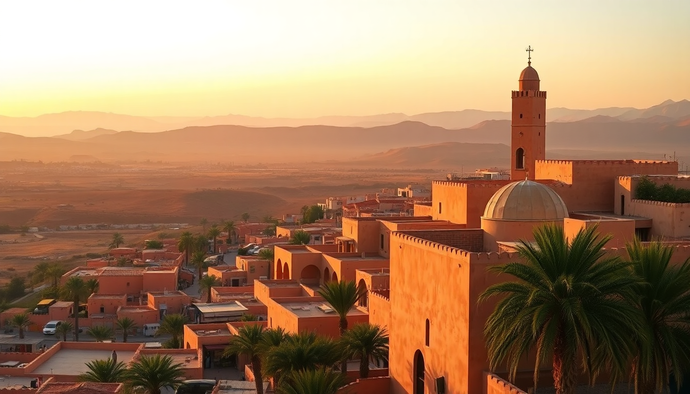

Where to Stay in Marrakech: Best Areas for Every Budget

I landed in Marrakech with a backpack and no plan, and spent my first two nights in a chaotic Medina riad that woke me at 5 a.m. with the call to prayer and a rooster. The next three nights in Gueliz were dead quiet but felt disconnected from the city’s pulse. Over multiple trips, I’ve learned exactly where to stay based on your budget and travel style. Here’s the no-fluff breakdown.
What is the Medina like for first-time visitors?
The Medina is the historic walled old city—a maze of narrow alleys, souks, and hundreds of riads (traditional guesthouses built around a central courtyard). If you want to be in the thick of it, this is your spot.
I stayed at Riad Yasmine on my second trip, and the rooftop breakfast with mint tea and orange blossom views was worth the 20-minute walk to the main square. But be honest with yourself: if you hate navigating tight alleys while dodging mopeds, or if you get anxious when taxi drivers can’t find your door, the Medina might not be for you.
- Riad Yasmine — Instagram-famous, small pool, book months ahead
- Riad Fes — mid-range, central near the Ben Youssef Madrasa
- Riad Kniza — splurge option with a hammam and guided tours
- La Sultana — luxury riad, five-star service, but pricey
The biggest trade-off: noise. You’ll hear the call to prayer, street vendors, and sometimes construction at 7 a.m. Bring earplugs.
Which part of the Medina should I choose?
The Medina has distinct zones, and picking the wrong one can mean a 25-minute walk to the main sights.
The northern Medina around Bab Doukkala is quieter and more local. I grabbed a great tagine at Café des Épices near the spice market—touristy but the rooftop is solid. The southern Medina near Jemaa el-Fnaa square is where most action happens, but it’s also where touts are relentless. The eastern Medina near the Bahia Palace is calmer and closer to the Jewish Quarter (Mellah).
- Jemaa el-Fnaa area — central, loud, best for nightlife seekers
- Bab Doukkala — local vibe, cheaper riads, good for budget travelers
- Mellah (Jewish Quarter) — quiet, historic, fewer tourists
- Kasbah — near the Saadian Tombs, upscale riads
I’d recommend the Mellah for solo travelers who want safety and quiet without sacrificing proximity. I walked to the main square in 12 minutes flat.
Is Gueliz better than the Medina for a quiet stay?
Gueliz is the modern European-style district built by the French in the early 20th century. Wide boulevards, chain stores, and actual sidewalks. If you want air conditioning, reliable WiFi, and zero chance of getting lost in a souk, stay here.
I booked Hotel Les Jardins de la Koutoubia on a work trip and loved having a proper desk and a pool that wasn’t the size of a bathtub. The downside? You lose the magic. No rooftop call to prayer, no spontaneous encounters with carpet sellers. It feels like a generic city.
- Hotel Les Jardins de la Koutoubia — solid four-star, great pool
- Hotel La Mamounia — iconic luxury, gardens, but book months ahead
- Ibis Marrakech Centre — budget chain, reliable, no surprises
- Kenzi Club Agdal — family-friendly with kids’ club
Gueliz is also where you’ll find better restaurants. Le Jardin in Gueliz has a shaded courtyard and serves excellent pastilla. Don’t skip Café Clock for camel burger (yes, it’s good).
What about Hivernage for luxury travelers?
Hivernage is Gueliz’s posh neighbor—wide tree-lined streets, upscale hotels, and the city’s best nightlife. If you’re on a honeymoon or a business trip with a generous budget, this is your zone.
I stayed at Sofitel Marrakech for a conference and was blown away by the spa and the pool area. It’s also a 10-minute walk to the Majorelle Garden, which is worth the entrance fee if you go early (before 10 a.m. to avoid crowds).
- Sofitel Marrakech — five-star, Moroccan-French fusion, huge pool
- Palais Namaskar — ultra-luxury, private villas, 15 minutes from center
- Royal Mansour — owned by the king, insane service, start saving now
- Hivernage Hotel — mid-range luxury, quieter than Gueliz
One warning: Hivernage is car-dependent. You’ll need taxis to get to the Medina (about 20 dirhams, negotiate upfront). Don’t walk alone at night in the side streets—it’s safe but poorly lit.
Where should budget travelers stay without sacrificing experience?
Budget doesn’t mean you sleep in a dorm with bedbugs. Marrakech has excellent hostels and cheap riads that still deliver atmosphere.
I crashed at Riad Marrakech (not the luxury one—there are two) for 150 dirhams a night. It was basic: a mattress on a rooftop, shared bathroom, but the hosts made mint tea and gave me a map. For a step up, Riad El Ouarda in the northern Medina costs about 250 dirhams and includes breakfast on a terrace with a view of the Atlas Mountains.
- Riad Marrakech — ultra-budget, rooftop sleeping, social vibe
- Riad El Ouarda — cheap private room, friendly hosts
- Equity Point Marrakech — hostel with pool, good for solo travelers
- Riad Dar El Souk — budget riad near the souks, clean
The trick for budget stays: book directly through the riad’s website or via Booking.com with free cancellation. Many charge extra for airport transfers (50 dirhams is fair). Also, bring cash—some budget riads don’t take cards.
Is the Palmeraie worth considering for a resort stay?
The Palmeraie is a sprawling palm oasis about 20 minutes from the city center. It’s where you go for all-inclusive resorts, golf, and total escape from the city chaos.
I spent two nights at Les Deux Tours and loved the silence—just birds and the rustle of palm fronds. But you’re isolated. To get to the Medina, you’ll need a 30-minute taxi (100-150 dirhams). If you’re only there for three days, it’s not worth the commute.
- Les Deux Tours — boutique resort, beautiful gardens, two pools
- Amanjena — ultra-luxury, Arnold Palmer-designed golf course
- Palmeraie Palace — family-friendly with water park
- Hotel Le Palais Rhoul — traditional Moroccan architecture, quiet
I’d recommend the Palmeraie only if you’re staying a week and want a day or two of resort time. For a short trip, stay in the city.
FAQ
Is it safe to stay in the Medina as a solo female traveler? Yes, but with common sense. I’ve traveled solo to Marrakech three times and stayed in the Medina each time. Stick to well-lit main alleys after dark, avoid empty souks at night, and use a riad that offers a pickup service. I always carried a doorstopper for my room. The biggest issue is persistent touts, not crime. If someone follows you, walk into a shop or say “la shukran” firmly.
How do I get from the airport to my accommodation? Taxis from Marrakech Menara Airport are fixed at 70 dirhams to the Medina and 100 dirhams to Gueliz or Hivernage. Negotiate before you get in. I always use the official taxi queue outside arrivals—don’t take offers from drivers inside the terminal. Alternatively, pre-book a transfer through your riad or hotel for about 150 dirhams.
What is the best neighborhood for families with kids? Gueliz or Hivernage. The Medina is a sensory overload for kids—narrow streets, scooters, strong smells. In Gueliz, you get parks like Jardin de la Menara (huge olive grove, free entry) and wider sidewalks. Kenzi Club Agdal has a kids’ club and a pool with shallow ends. If you want a riad experience, choose one with a pool and a family room—Riad Fes has family suites.
Conclusion
- Medina (Mellah or Bab Doukkala) — best for culture, budget, and solo travelers who don’t mind noise
- Gueliz — best for quiet, reliable WiFi, and families; sacrifices atmosphere
- Hivernage — best for luxury and nightlife; requires taxis for sightseeing
- Palmeraie — best for resort stays and total relaxation; skip if you’re short on time
- Budget tip — book riads directly, bring cash, and always negotiate taxi fares upfront